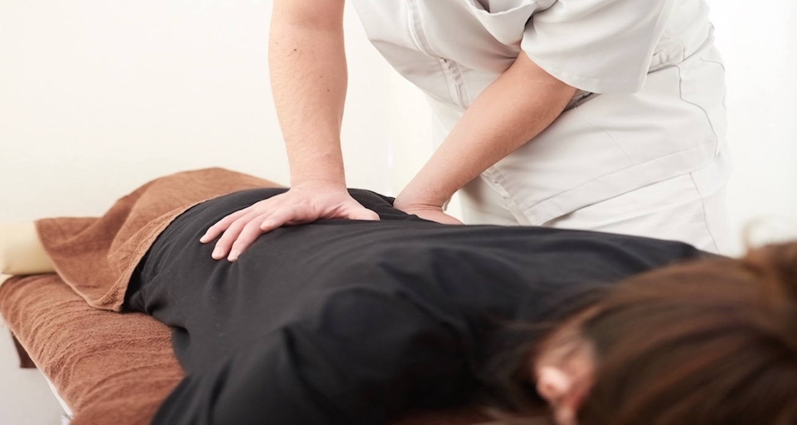
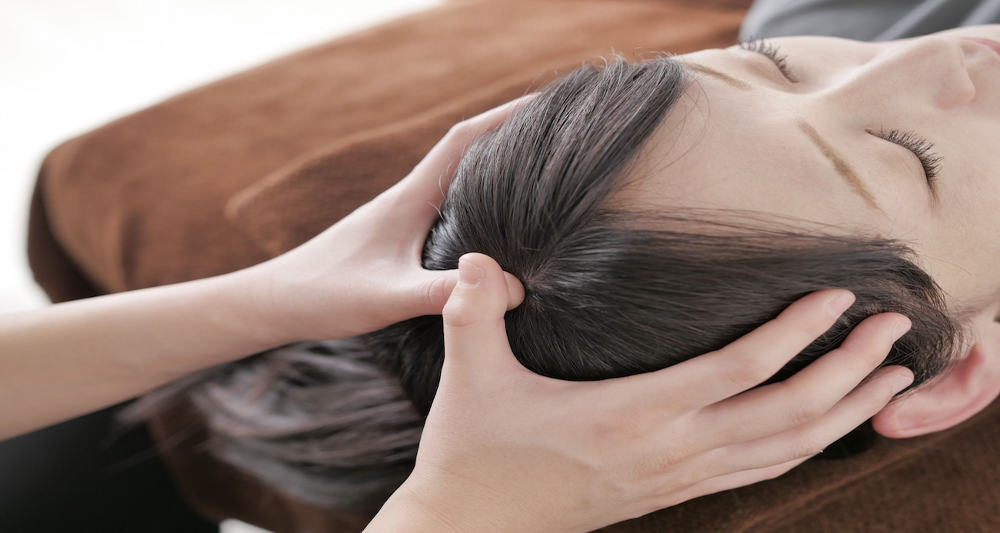
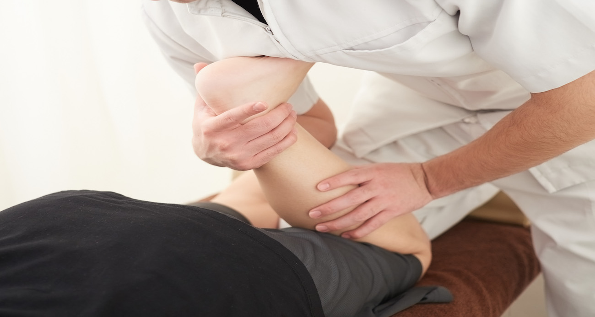

営業時間
10:00 ~ 20:00
火曜定休
その他不定休あり
ご予約しご来店ください。
住所
◯◯県◯◯市◯◯町１１１
当院の概要
風の庵（かぜのいおり）」はカイロプラクティックのお店です。 2009年に開業し、患者様のお悩みと向き合い続けてきました。
お客様の健康のサポートをして行きたいと思います。
自然治癒力を高めるお手伝い
当院では、痛みや不調の改善だけ行うわけではありません。
日常生活におけるクセや偏りを改善するアドバイスも行なっていきます。「ずっと治らなかった頭痛が治った」「施術をしてもらってから身長が伸びた」患者様からそんな声もいただきます。
それは、歪んでいた骨を正常な位置に戻したことによるもので、本当に身長が伸びたというよりは、歪みによって縮こまってしまった身体を正すことで、本来の身長に戻ったという方が表現として適切かもしれません。
骨の歪みは、思っていたよりも身体に影響を及ぼしていることがわかると思います。 当院では、生涯にわたり、健やかな生活を送るお手伝いをさせていただきます。